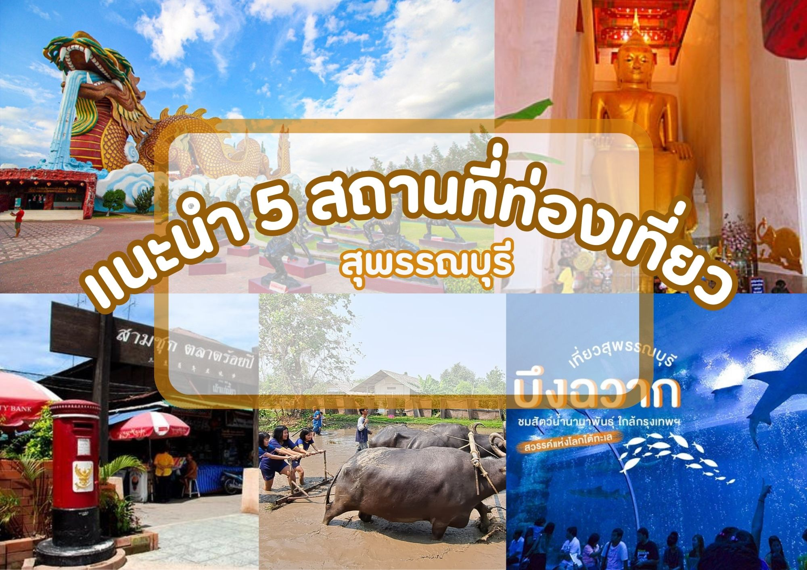

ใครที่ได้มาสุพรรณบุรีต้องได้มา "มังกรสวรรค์" เป็นที่เที่ยวดังสุพรรณบุรีเลยทีเดียว ที่นี่สร้างขึ้นในปี พ.ศ.2539 ตั้งอยู่ภายในศาลเจ้าพ่อหลักเมืองสุพรรณบุรี เนื่องในโอกาสที่ประเทศไทยและจีน มีความสัมพันธ์ทางการทูตครบ 20 ปี นั่นเอง โดยมีความโดดเด่นสวยงาม ก็คือ รูปปั่นมังกรขนาดใหญ่ ที่ตั้งอยู่นั่นเอง
แนะนำ 5 ที่เที่ยวสุพรรณบุรี น่าไป
